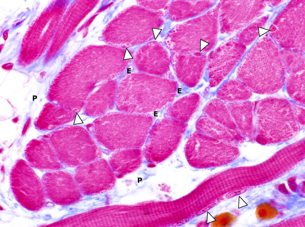

In skeletspierweefsel zijn skeletspiercellen parallel gerangschikt. Elke skeletspiercel is omgeven door een dun laagje reticulair bindweefsel dat de afzonderlijke spiercellen samenhoudt en endomysium wordt genoemd. Spiercellen liggen verzameld in grotere spierbundels die omgeven zijn door perimysium, een bindweefsellaagje dat naast collageen en elastisch bindweefsel ook bloedvaten en zenuwbundels bevat. Al deze spierbundels vormen samen een spier, waarrond een stevig kapsel ligt van dicht collageen bindweefsel, het epimysium. De collageenvezels van het endomysium, perimysium en epimysium komen samen aan het uiteinde van een spier, zodat een pees tot stand komt. In het endomysium rondom de spiercellen dringen zenuwvezels door die contact kunnen maken met de spiercellen.

Doorsnede van dwarsgestreept skeletspierweefsel. In dit preparaat zien we zowel spierbundels (en dus ook de spiercellen) die overlangs als dwars aangesneden zijn. Op sommige plaatsen zie je de perifere ligging van de kernen (pijlpunten) in de cellen duidelijk. Rond elke spiercel bevindt zich endomysium (E), rondom de spierbundel perimysium (P).
Vordering zelfstudie spierweefsel: